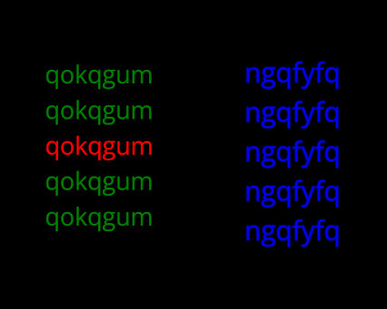

<!DOCTYPE html>
<html>

<head>
  <title>Zeng replication</title>
  <script src="https://ajax.googleapis.com/ajax/libs/jquery/3.7.1/jquery.min.js"></script>
  <script src="jspsych/dist/jspsych.js"></script>
  <script src="jspsych/dist/plugin-html-keyboard-response.js"></script>
  <script src="jspsych/dist/plugin-fullscreen.js"></script>
  <script src="jspsych/dist/plugin-instructions.js"></script>
  <script src="jspsych/dist/plugin-call-function.js"></script>
  <script src="jspsych/dist/plugin-html-keyboard-response.js"></script>
  <script src="jspsych/dist/plugin-html-button-response.js"></script>
  <script src="jspsych/dist/plugin-survey-multi-choice.js"></script>
  <script src="jspsych/dist/plugin-survey.js"></script>
  <script src="jspsych/dist/plugin-preload.js"></script>
  <script src="local.js"></script>
  <script src="config.js"></script>
  <link href="jspsych/dist/jspsych.css" rel="stylesheet" type="text/css" />
  <link href="css/082_exp_design.css" rel="stylesheet" type="text/css" />
  <link href="css/survey.css" rel="stylesheet" type="text/css" />
  <!--<link rel="stylesheet" href="https://unpkg.com/@jspsych/plugin-survey@0.2.0/css/survey.css">-->


</head>

<body>

</body>
<script>
fetch('http://metasciencelab.hu/generate-trials')
 .then(response => response.json())
 .then(data => {
   
   window.practice_blocks = data['practice_trials_block']
   window.positive_trials_block_1 = data['positive_trials_block_1']
   window.positive_trials_block_2 = data['positive_trials_block_2']
   window.negative_trials_block_1 = data['negative_trials_block_1']
   window.negative_trials_block_2 = data['negative_trials_block_2']
   window.neutral_trials_block_1 = data['neutral_trials_block_1']
   window.neutral_trials_block_2 = data['neutral_trials_block_2']
  // -------------------JsPsych-------------------------------------------------------------------------------------------
  // read conditions from the first trial
  var reversed_correct_responses = window.practice_blocks[0]['reversed_correct_responses']
  var reversed_color_axes = window.practice_blocks[0]['reversed_color_axes']
  var fingers = window.practice_blocks[0]['fingers']
  var timeline = []

  function saveData(data) {
  // send csv data to node.js server /save-data route
  $.ajax({
    type: 'post',
    cache: false,
    url: 'http://localhost:3000/save-data',
    contentType: 'application/json',
    data: data,
  });
 }

    var jsPsych = initJsPsych({
    timeline: timeline,
    on_finish: function () {
      console.log(jsPsych.data.get())
      saveData(JSON.stringify(jsPsych.data.get()));
      
      jsPsych.data.displayData();
    },
    override_safe_mode: true
  })

  // generate random participant id
  var participant_id = jsPsych.randomization.randomID(15);

  jsPsych.data.addProperties({
    participant_id: participant_id,
  });


  var informedProceed = true
  var debug = 0
  var lang = config['language']

  var consentProceed = true

  // Informed consent
  var informedScreen = {
    timeline: [{
      type: jsPsychHtmlButtonResponse,
      stimulus: function () {
        return `<div> 
        <h1>`+ exp_text['informed_consent_title'][lang] + `</h1> 
        <p>
        `+ exp_text['informed_consent_p1'][lang] + `
        </p>
        <p> 
        `+ exp_text['informed_consent_p2'][lang] + `
        <p/>
        <p>
        `+ exp_text['informed_consent_p3'][lang] + `
        <p/>
        <p>
        `+ exp_text['informed_consent_p4'][lang] + `
        <p/>
        <p class=${informedProceed ? null : 'alert'}>` + exp_text['informed_consent_next'][lang] + `</p>
        </div>
    `},
      choices: [exp_text['informed_consent_next_no'][lang], exp_text['informed_consent_next_yes'][lang]],
      on_finish: function (data) {
        // agree is 0, not agree is 1 as a response
        if (data.response === 0) {
          consentProceed = true
        } else {
          consentProceed = false
        }
      },
      data: {
        task: 'consent'
      },
      save_trial_parameters: {
        stimulus: false
      }
    }],
    loop_function: function () {
      if (consentProceed) {
        return false;
      } else {
        return true;
      }
    }
  };

  var consentScreen = {
    timeline: [{
      type: jsPsychHtmlButtonResponse,
      stimulus: function () {
        return `<div>
        <h1>`+ exp_text['informed_consent_2_title'][lang] + `</h1>
        <p>
        `+ exp_text['informed_consent_2_p1'][lang] + `
        </p>
        <br>
        <h3>`+ exp_text['informed_consent_2_p2'][lang] + `</h3>
        <p class=${consentProceed ? null : 'alert'}>` + exp_text['informed_consent_next'][lang] + `</p>
        </div>
    `},
      choices: [exp_text['informed_consent_next_no'][lang], exp_text['informed_consent_next_yes'][lang]],
      on_finish: function (data) {
        // agree is 0, not agree is 1 as a response
        if (data.response === 0) {
          consentProceed = true
        } else {
          consentProceed = false
        }
      },
      data: {
        task: 'consent'
      },
      save_trial_parameters: {
        stimulus: false
      }
    }],
    loop_function: function () {
      if (consentProceed) {
        return false;
      } else {
        return true;
      }
    }
  }

  var images = ["images/both_fingers.gif", "images/index_fingers.gif", "images/middle_fingers.gif", "images/stimulus_example.png"]

  var preload = {
    type: jsPsychPreload,
    images: images
  }
  
  function instruction_stim(reversed_color_axes, reversed_correct_responses, fingers) {
      if (fingers === 'index') {
        var current_finger = 'mutatóujj'
        var gif_path = 'images/index_fingers.gif'
      } else if (fingers === 'middle') {
        var current_finger = 'középsőujj'
        var gif_path = 'images/middle_fingers.gif'
      } else {
        var current_finger = 'mutató- és középsőujj'
        var gif_path = 'images/both_fingers.gif'
      }
      if (reversed_color_axes === 'TRUE' && reversed_correct_responses === 'TRUE') {
        mapping = 'D - ZÖLD, F - SÁRGA, J - KÉK, K - PIROS'
        } else if (reversed_color_axes === 'TRUE' && reversed_correct_responses === 'FALSE') {
        mapping = 'D - PIROS, F - KÉK, J - SÁRGA, K - ZÖLD'
        } else if (reversed_color_axes === 'FALSE' && reversed_correct_responses === 'TRUE') {
        mapping = 'D - SÁRGA, F - ZÖLD, J - PIROS, K - KÉK'
        } else {
        mapping = 'D - KÉK, F - PIROS, J - ZÖLD K - SÁRGA'
      }

     return`
  <div>
  <h1>`+ exp_text['instructions_title'][lang] + `</h1>
  <p>
    `+ exp_text['instructions_instruct_1'][lang] + `
  </p>
  <p>
    </img>
  </p>
  <p>
    `+ exp_text['instructions_instruct_2'][lang] + `
  </p>
  <p> 
    <strong> 
      ` + exp_text['instructions_fingers'][lang] + current_finger + `
    </strong>
  </p>
  <p>
    <strong>
      `+ exp_text['instructions_fingers_2'][lang] + `
    </strong>
  </p>
  <p>
    </img>
  </p>
  <p>
    <strong>
      `+ exp_text['instructions_mappings'][lang] + mapping + `
    </strong>
  <p>
    `+ exp_text['instructions_p1'][lang] + `
    
    `+ exp_text['instructions_p2'][lang] + `
  </p>
  `+ exp_text['instructions_p3'][lang] + `
  </div>
  `
  }

  const instructionsScreen = {
    type: jsPsychHtmlKeyboardResponse,
    stimulus: instruction_stim(reversed_color_axes, reversed_correct_responses, fingers),
    choices: [" "],
    data: {
      task: 'instructions'
    },
    save_trial_parameters: {
      stimulus: false
    }

  }

  const neptun_demographics = {
    type: jsPsychSurvey,
    pages: [
      [
        {
          type: 'html',
          prompt: exp_text['survey_title'][lang]
        },
        {
          type: 'text',
          prompt: exp_text['survey_q1'][lang],
          name: 'neptun',
          required: true,
        },
        {
          type: 'drop-down',
          prompt: exp_text['survey_q2'][lang],
          options: exp_text['survey_q2_choices'][lang],
          name: 'nem',
          required: true,
          dropdown_select_prompt: exp_text['survey_dropdown_prompt'][lang]
        },
        {
          type: 'text',
          prompt: exp_text['survey_q3'][lang],
          input_type: 'number',
          name: 'kor',
          required: true,
        },
        {
          type: 'drop-down',
          prompt: exp_text['survey_q4'][lang],
          options: exp_text['survey_q4_choices'][lang],
          name: 'vegzettseg',
          required: true,
          dropdown_select_prompt: exp_text['survey_dropdown_prompt'][lang]
        }
      ]
    ],
    required_error: exp_text['required_error'][lang],
    button_label_finish: exp_text['send_prompt'][lang],
    data: {
      task: 'survey'
    },
  }

  var fullscreen_trial = {
    type: jsPsychFullscreen,
    fullscreen_mode: true,
    button_label: exp_text['fullscreen_button_label'][lang],
    message: exp_text['fullscreen_text'][lang]
  }

  var fullscreen_exit_trial = {
    type: jsPsychFullscreen,
    fullscreen_mode: false
  }

  var TestLoopIndex = 1;

  var pause = {
    type: jsPsychHtmlKeyboardResponse,
    stimulus: function () {
      return `
  <div>
  <h1>` + exp_text['end_of_block_title'][lang] + `</h1>
  <p>
    `+ exp_text['end_of_block_p1'][lang] + `
  </p>
  <p>
    `+ exp_text['end_of_block_p2'][lang] + `
  </p>
  <p>
    `+ exp_text['end_of_block_p3'][lang] + mapping + `
  </p>
  `+ exp_text['end_of_block_next'][lang] + `
  </div>
  `},
    choices: [" "],
    post_trial_gap: 0,
    data: {
      task: 'pause'
    },
    save_trial_parameters: {
      stimulus: false
    }
  }

  var PracticeLoopIndex = 1;

  var test = {
    type: jsPsychHtmlKeyboardResponse,
    stimulus: jsPsych.timelineVariable("stimulus"),
    choices: ["f", "j", "d", "k"],
    trial_duration: 1500,
    response_ends_trial: true,
    data: {
      task: 'response',
      correct_response: jsPsych.timelineVariable("correct_response"),
      congruency: jsPsych.timelineVariable("congruency"),
      condition: jsPsych.timelineVariable("condition"),
      target_color: jsPsych.timelineVariable("target_color"),
      arousal_mean_rating: jsPsych.timelineVariable("arousal_mean_rating"),
      valence_mean_rating: jsPsych.timelineVariable("valence_mean_rating"),
      arousal_median_rating: jsPsych.timelineVariable("arousal_median_rating"),
      valence_median_rating: jsPsych.timelineVariable("valence_median_rating"),
      arousal_sd_rating: jsPsych.timelineVariable("arousal_sd_rating"),
      valence_sd_rating: jsPsych.timelineVariable("valence_sd_rating"),
      finger: jsPsych.timelineVariable("fingers"),
      reversed_color_axes: jsPsych.timelineVariable("reversed_color_axes"),
      reversed_correct_responses: jsPsych.timelineVariable("reversed_correct_responses")
    },
    on_finish: function (data) {
      data.correct = jsPsych.pluginAPI.compareKeys(data.response, data.correct_response);
    },
    css_classes: ['stim']
  }

  var blank = {
    type: jsPsychHtmlKeyboardResponse,
    stimulus: '',
    choices: "NO_KEYS",
    trial_duration: function () {
      // define a random duration between 2000 and 2500ms
      return Math.floor(Math.random() * 500) + 2000;
    },
    response_ends_trial: false,
    data: {
      task: 'blank'
    },
    save_trial_parameters: {
      stimulus: false,
      choices: false,
      trial_duration: true,
      response: false,
      rt: false
    }
  }

  var accuracy = 0;

  var procedure_practice = {
    timeline: [blank, test],
    timeline_variables: window.practice_blocks,
    data: {
      block: 'practice'
    },
    on_finish: function (data) {
      var trials = jsPsych.data.get().filter({task: 'response', loop: PracticeLoopIndex})
      var correct_trials = jsPsych.data.get().filter({task: 'response', correct: true, loop: PracticeLoopIndex})
      accuracy = Math.round(correct_trials.count() / trials.count() * 100)
    }
  }

  var practice_reloop_message = {
    type: jsPsychHtmlKeyboardResponse,
    stimulus: function () {
      return `
  <div>
  <h1>`+ exp_text['end_of_practice_loop_title'][lang] + `</h1>
  <p>
    `+ exp_text['end_of_practice_loop_p0'][lang] + accuracy + '%' +`
  </p>
  <p>
    `+ exp_text['end_of_practice_loop_p1'][lang] + `
  </p>
  <p>
    `+ exp_text['end_of_practice_loop_p2'][lang] + `
  </p>
  <p>
    `+ exp_text['end_of_practice_loop_p3'][lang] + mapping +`
  </p>
    `+ exp_text['end_of_block_next'][lang] + `
  </div>
  `
    },
    choices: [" "],
    post_trial_gap: 0,
    data: {
      task: 'pause_practice'
    },
    save_trial_parameters: {
      stimulus: false
    }
  }

  var practice_reloop_node = {
    timeline: [procedure_practice, practice_reloop_message],
    on_timeline_start: function (data) {
      console.log(PracticeLoopIndex + '. practice loop')
    },
    on_timeline_finish: function () {
      PracticeLoopIndex++
    },
    loop_function: function (data) {
      if (accuracy >= 85) { 
      console.log('accuracy passed') 
      return false 
    } else { 
      console.log('accuracy failed')
      return true
    }
    },
  }

  var positive_procedure_1 = {
    timeline: [blank, test],
    timeline_variables: window.positive_trials_block_1
  }

  var positive_procedure_2 = {
    timeline: [blank, test],
    timeline_variables: window.positive_trials_block_2
  }

  var negative_procedure_1 = {
    timeline: [blank, test],
    timeline_variables: window.negative_trials_block_1
  }
  var negative_procedure_2 = {
    timeline: [blank, test],
    timeline_variables: window.negative_trials_block_2
  }
  var neutral_procedure_1 = {
    timeline: [blank, test],
    timeline_variables: window.neutral_trials_block_1
  }
  var neutral_procedure_2 = {
    timeline: [blank, test],
    timeline_variables: window.neutral_trials_block_2
  }  

  var positive_block_1 = {
    timeline: [positive_procedure_1, pause],
    on_timeline_start: function (data) {
      console.log('first positive block')
    },
    on_timeline_finish: function () {
      TestLoopIndex++
    },
  }

  var positive_block_2 = {
    timeline: [positive_procedure_2, pause],
    on_timeline_start: function (data) {
      console.log('second positive block')
    },
    on_timeline_finish: function () {
      TestLoopIndex++
    }
  }

  var neutral_block_1 = {
    timeline: [neutral_procedure_1, pause],
    on_timeline_start: function (data) {
      console.log('first neutral block')
    },
    on_timeline_finish: function () {
      TestLoopIndex++
    }
  }

  var neutral_block_2 = {
    timeline: [neutral_procedure_2, pause],
    on_timeline_start: function (data) {
      console.log('second neutral block')
    },
    on_timeline_finish: function () {
      TestLoopIndex++
    }
  }

  var negative_block_1 = {
    timeline: [negative_procedure_1, pause],
    on_timeline_start: function (data) {
      console.log('first negative block')
    },
    on_timeline_finish: function () {
      TestLoopIndex++
    }
  }

  var negative_block_2 = {
    timeline: [negative_procedure_2, pause],
    on_timeline_start: function (data) {
      console.log('second negative block')
    },
    on_timeline_finish: function () {
      TestLoopIndex++
    }
  }

  var endofexp = {
    type: jsPsychHtmlKeyboardResponse,
    stimulus: function () {
      return `
  <div>
  <h1>
    `+ exp_text['end_of_exp_p1'][lang] + `
  </h1>
  <p>
    `+ exp_text['end_of_exp_p2'][lang] + `
  </p>
  <p>
    `+ exp_text['end_of_exp_p3'][lang] + `
  </p>
  `+ exp_text['end_of_exp_next'][lang] + `
  </div>
  `},
    choices: [" "],
    post_trial_gap: 0,
    data: {
      task: 'endofexperiment'
    },
    save_trial_parameters: {
      stimulus: false,
      choices: false
    }
  }
  
  // flip a coin for order of conditions
  var coinflip = Math.random() > 0.5;

  if (coinflip) {
    timeline.push(
      fullscreen_trial,
      informedScreen,
      consentScreen,
      neptun_demographics,
      instructionsScreen,
      practice_reloop_node,
      negative_block_1,
      negative_block_2,
      neutral_block_1,
      neutral_block_2,
      positive_block_1,
      positive_block_2,
      endofexp,
      fullscreen_exit_trial
    )
  } else {
    timeline.push(
      fullscreen_trial,
      informedScreen,
      consentScreen,
      neptun_demographics,
      instructionsScreen,
      practice_reloop_node,
      positive_block_1,
      positive_block_2,
      neutral_block_1,
      neutral_block_2,
      negative_block_1,
      negative_block_2,
      endofexp,
      fullscreen_exit_trial
    )
  }

 jsPsych.run(timeline)
})
</script>

</html>
